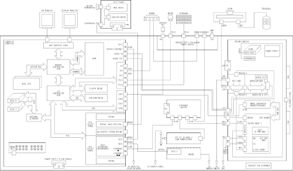
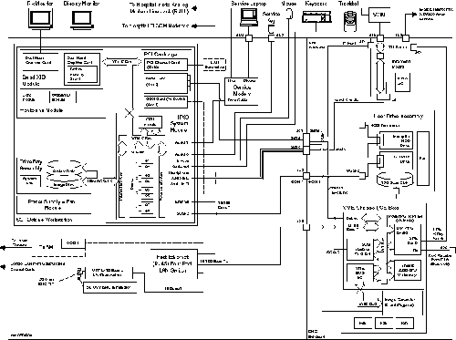
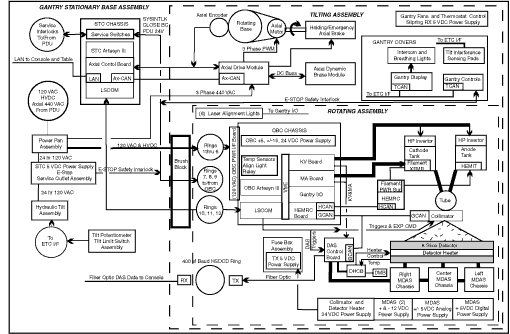

Operating Documentation
Direction 5114043-800, Rev# 9
LightSpeed 3.X Service Methods (Advanced)
Operating Documentation |
| Last Revised on: | June 4, 2007 |
The purpose of this overview is to explain the organization and data flow within the LightSpeed 3.X scanner system. The intent of this overview is to explain how the complete system works at a high level.
Refer to the following System Block Diagrams during this discussion.
Illustration 1 - System Block Diagram (Global Console - Linux)
Illustration 2 - System Block Diagram (Global Console - Octane2)
Illustration 3 - System Block Diagram (H3 Console)
Illustration 4 - System Block Diagram (Gantry)
Illustration 5 - System Block Diagram (Table)
The Subsystem Block Diagram details are covered in the following sections or linked procedures:
Console (see Section 2.1)
Gantry - Stationary (see Section 2.2)
Gantry - Tilting Frame (see Section 2.3)
Gantry - Rotating (see Section 2.4)
Table (see Section 2.5)
PDU - See Compact Power Distribution Unit Theory (Model 2269902) or NG Power Distribution Unit (PDU) Theory.
| NOTE: | For additional detailed Console, Gantry, and Table theory, click the “Theory” topic on the main publication menu. |
Illustration 1: System Block Diagram (Global Console - Linux)

| NOTE: | For a full size version of Illustration 1, click on the pdf icon below. |
Media File 1: Full Size Illustration: System Block Diagram (Global Console - Linux)

Illustration 2: System Block Diagram (Global Console - Octane2)

| NOTE: | For a full size version of Illustration 2, click on the pdf icon below. |
Media File 2: Full Size Illustration: System Block Diagram (Global Console - Octane2)

Illustration 3: System Block Diagram (H3 Console)

| NOTE: | For a full size version of Illustration 3, click on the pdf icon below. |
Media File 3: Full Size Illustration: System Block Diagram (H3 Console)

Illustration 4: System Block Diagram (Gantry)

| NOTE: | For a full size version of Illustration 4, click on the pdf icon below. |
Media File 4: Full Size Illustration: System Block Diagram (Gantry)

Illustration 5: System Block Diagram (Table)

The LightSpeed 3.X (Ultra, Plus or QX/i, with MDAS) systems are shipped with one of three different console configurations: the Global Console - Linux (GC-Linux), the Global Console - Octane2 (GC-Oct2) or the H3 console. For more information on the differences between the three consoles, refer to the appropriate Console theory procedure.
For the following discussion, refer to Illustration 1 (GC-Linux), Illustration 2 (GC-Oct2) or Illustration 3 (H3 Console).
The console contains the Host computer (SGI-Octane, or HP xw8000)-including the system CD-ROM and MOD drives-and the ICE Box (Image chain engine).
The Host computer (OC) controls and interfaces with the following hardware:
Scan CRT- Displays scan parameter screens used by the operator to perform Scout, Axial, and Helical scans; recon control, and routine operator functions on the system. This screen does not display images. The OC uses the Solid Impact interface board to control the display of data on the monitor.
Display CRT - Displays images scanned by the system. Also displays screens that allow the operator to access system troubleshooting functions, view the system error log, view other images or exams stored in the system, archive images, select images for filming, and access functions used to do analysis, process and manage displayed images, and work with network functions. The OC utilizes the High Impact board to control data display on this monitor.
Mouse - Connects to the OC and is used by the operator to make selections on either of the two display screens.
Keyboard - Allows operator to input text, IRIX or UNIX commands, or selections required by the system software. The keyboard also contains the intercom speaker, microphone, and volume controls.
Trackball - Used by the operator to manipulate displayed images, instead of using the mouse. Allows one person to operate the system using the mouse and another person to simultaneously view/film images using the trackball.
MOD & CD-ROM - The OC controls operation of the MOD drive and CD-ROM via an external SCSI interface. The MOD is used for the storage or retrieval of images using DICOM 3.0 format. The MOD can hold 4700 loss-less (JPEG compressed 512x512) image files per side, or 350 uncompressed scan data files per side. The CD-ROM is used primarily for the on-screen tutorial support function called “Sherlock.” This audio and video program supports the Exam Rx and Image Works functions for system help. This drive is also used to load software and read Service publications in Adobe Acrobat format.
External Connections - External connectors are provided on the OC to support a service key, Insite, DASM for laser camera operation, and an external LAN interface.
Local Disk (SGI Octane) - The OC computer operates on SGI’s IRIX software residing on a dedicated local system disk with room for 3700 uncompressed 512x512 images. An additional system disk can be added to expand image storage by 7400 uncompressed 512x512 images for a total of 11,100 images. All images are stored on this disk.
Data from the MDAS is applied to the DAS Interface Processor (DIP). The DIP board receives the serial DAS data, checks the serial data for correctness and applies forward error correction when required. If the scan data cannot be corrected then a scan abort condition is generated. Scan data is stored in one of two 2MB memory modules on the DIP. The serial data is sent to the scan data disk, for temporary storage.
When sufficient data has been sent to disk, it is sent to the Recon Interface Processor (RIP) in the ICE box. The serial data is released in 100-view data packets to the RIP, which performs a checksum on the incoming data. The RIP then sends the scan data to the Pegasus Image Generator board (PEG-IG), for scan data corrections. The PEG-IG performs preprocessing, calibration and scout image functions.
The PEG-IG board then performs convolution and back-projection upon the data. When complete, the PEG-IG board sends the image data back to the RIP, where post-processing is performed to create the final image in DICOM 3.0 format.
The RIP sends the completed image to the OC via the LAN switch. The OC then writes the image data to the system disk and also sends a copy to the High Impact board for image display.
For the following discussion, refer to Illustration 4.
The Gantry stationary control is located within the STC computer chassis, which contains the STC computer, an axial board and the LSCOM board.
Under STC control, the axial board is the interface that controls gantry rotation. The axial board connects to, and controls the operation of the Servo amplifier, which is located in the chassis assembly in front of the axial drive motor mounted to the gantry tilt assembly.
When commanded by the system, the STC through the axial board enables the Allen Bradley servo-amp, to supply PWM voltage to the axial drive motor. The gantry can rotate speeds of 0.5, 0.6, 0.7, 0.8, 1, 2, 3, or 4 seconds. Connected to the Gantry Rotating base assembly, on the gantry drive belt toothed interface, is an encoder. The output of the encoder is sent to both axial board and servo amplifier as feedback. The STC is the master. It compares the encoder feedback and the Allen Bradley servo amplifier position feedback to ensure the gantry is rotating at the correct speed.
Using the rotational information provided by the encoder, the axial board uses a specialized circuit to output two types of signals used by the system: DAS triggers and the Exposure command.
DAS triggers are timing signals that are generated. These signals (triggers) are sent to the MDAS, causing it to convert X-Ray information from the Detector into digital data. This data is sent to the DIP and the ICE Box to produce an image.
The Exposure command is sent to the KV board in the OBC chassis. This signal causes the KV board to enable the High Voltage circuits of the Gantry, which in turn cause the X-Ray tube to produce X-Rays. As its name implies, the signal turns high voltage on and off, which via the X-Ray tube, turns on or off X-Rays.
The Collimator Control board also receives the DAS triggers and Exposure command signals which are used in closed loop operation.
A LAN is located on the STC CPU, which connects directly to the VME bus. Through this LAN, the STC receives applications firmware and interacts with the OC during the scan process.
The lSCOM board is used to provide 2-way serial data transmission across the Gantry slip-rings. Data or commands are sent across the slip-rings between the stationary LSCOM under control of the STC, and the same for the rotating LSCOM board under control of the OBC. Data received by the stationary LSCOM is converted into serial data packets with CRC checking and send across the low resistance slip-rings to the rotating LSCOM. The rotating LSCOM receives the serial data and checks the CRC value. If correct, the LSCOM converts the data back to parallel and sends it to the OBC. If the transmitted CRC character does not check out, then the LSCOM boards will ask to retransmit the data. There is no error correction function provided by either the LSCOM boards.
The LSCOM boards are identical and interchangeable.
The STC computer, via the axial board, has control of the “system interlock” line. This is a relay contact located on the axial board, which is in series with the X-ray abort relay located on the DIP board. This provides the STC with a way to abort a scan in the event of a detected fault.
The gantry tilting frame contains all of the rotating components discussed in the next sub-section. Other items mounted to this assembly include the Axial Drive circuitry, Slipring assembly, Intercom and gantry Display and Controls.
For the following discussion, refer to Illustration 4.
All of the functions located on the rotating gantry are controlled by the OBC computer. These functions include:
Generation of High voltage
Rotor Control
Collimator and Filter control
Filament and tube current control
Detector
DAS Operation
Tube
Control of the HVDC bus in the PDU
Alignment lights
System monitoring functions
High Voltage Control - The system uses a High Frequency controlled High Voltage generator. The OBC sends to the KV board a calibration word based upon the High Voltage value selected by the operator for the specific scan prescription. Options include 80, 100, 120, and 140KV. The calibration word is used to set up the KV board and output a timing signal in the range of 20KHz to 33KHz. The frequency of the signal is directly related to the KV value and tube current selected. A 20KHz provides 75KV. Moving towards 33KHz produces 40KV. This timing signal is sent out to the power inverters. The power inverters control the frequency and duty cycle of the IGBTs. The HVDC is then applied to the High Voltage tank, which produces one half of the selected KV. There are two high voltage tanks: the anode and the cathode. The anode tank produces a positive bias high voltage, and the cathode tank produces a negative bias high voltage. These voltages are applied to the anode and cathode connections of the X-ray tube, so that the full selected KV value is felt across the tube. The output of each tank has a scaled feedback signal that goes to the KV board and provides closed loop control of the KV being generated. Since there are two tanks there are two closed loops, one for the anode tank and one for the cathode tank.
Rotor control - The x-ray tube utilizes a rotating target. The rotor control circuits allow the tube rotor to be brought up to normal speed (8000 rpm) and when the system has finished scanning, to brake the rotor. This process uses the rotor control board within the OBC chassis, which connects to the High Efficiency Motor Rotor Controller module within the gantry (HEMRC). The HEMRC connects to the anode high voltage tank, to a special transformer called the HEMIT. The HEMIT connects to the stator windings of the tube via the anode high voltage cable. Control signals and fault conditions are sent over a CAN (control area network) network (HEMRC-CAN) between the rotor controller and the HEMRC.
Collimator and Filter control - The collimator unit is controlled by the OBC via the RCIB-CAN network. The collimator uses two eccentric cams that position the x-ray beam over the selected area of the detector. This in turn is based upon the selected image/ thickness by the operator. For instance if the operator selects a 4 X 1.25mm detector collimation (4 images @ slice of 1.25mm each), the final image could be in one of the following image/ thicknesses: 4 X 1.25mm, 2 X 2.25mm, or 1 X 5mm. The filter is under software control and has two positions used at scan level: one for head scans and another for body scans. The purpose of the filter is to attenuate the X-ray beam output of the X-ray tube by filtering out soft X-ray energy and to provide more X-ray energy over the patient channels of the detector, and less X-ray energy over the non-patient channels of the detector. The collimator is basically a beam limiting device. True beam collimation is controlled by the detector. This arrangement is better known as post-patient collimation.
Filament power and Tube current control - Provided by the MA control board. The operator can select tube current in the range of 10ma to 440ma, depending on selected kv, in 10ma increments. At the start of a scan sequence the tube current selection is sent to the MA control board, and under control of the OBC, the filament is pre-heated at low power for warm up. Then the filament is powered up to 97% of the selected tube current value until high voltage is turned on to produce X-rays. Then the tube current feedback from the high voltage tanks to the MA control board will cause the tube current to be regulated to the selected value.
Detector - New design that allows up to eight (8) images to be acquired in one gantry rotation. The detector is arranged with 768 output channels. Each channel is made up of 16 cells. Each cell is 1 mm wide and 1.25 mm long. Using FET switching within the detector design, the individual cells of a channel are arranged in a unique way to provide up to eight images in one data collection. The selections are:
4 X 1.25mm
4 X 2.5mm
4 X 3.75mm
4 X 5mm
8 x 1.25mm
8 x 2.5mm
1 x 1.25mm Single slice
2 x 1.25mm Thin Twin
The detector has a strip heater applied to it to maintain its temperature at approximately 32 degrees C ± 1 degree C.
MDAS - The MDAS is an extremely high speed A/D converter. It takes the inputs from the detector, and converts these signals into 16 bit digital words, and sends them to the DIP in less than one millisecond. The DAS is normally triggered at a 984 Hz sample rate, this will vary based upon the requested data collection mode. The MDAS does the selection of the FET switches in the detector based upon operator scan selections. The MDAS monitors and controls the detector temperature via the Detector Heater Control board, DHCB, at 32º C ± 1º C. The OBC communicates to the MDAS over the RCIB-CAN. This connection serves as a path for commands and detector FET selection to the MDAS and status and fault reporting from the MDAS.
Tube - The LightSpeed 3.X system uses the Performix 630 Metal-Ceramic tube. This tube is designed for exams requiring a large number of scans without pausing for tube cooling. The tube has a heat storage capacity of 6.3 MHU and a maximum power capacity of 53.2 KW. This tube also incorporates a tube cooling design that uses serviceable air filters.
HVDC Power Supply - Located within the CPDU, is the unregulated HVDC power supply. The typical bus voltage should be between 400 vdc and 700 vdc depending on the selected technique. Be aware that the voltage can rise above 700 vdc during rotor breaking. The HEMRC is designed to manage this occurrence. This HVDC is used in the system for the generation of high voltage and also by the rotor controller to accelerate and run the rotor. The OBC controls the normal turning on and off of this DC supply.
Alignment lights - used by the operator for positioning patients for the starting point for scans. These lights are solid state laser type with built in diffusers.
System monitoring - The OBC computer uses the Gentry I/O board to monitor scanner operation. Located on the Gentry I/O board is an A/D converter, through which there are many connections throughout the Gantry. The OBC is then able to measure items like: KV output, MA output, chassis voltages, tube temperature etc.
Slip-Rings - there are 12 slip-rings and one HSDCD slip-ring used in the gantry. The uses of the slip-ring is as follows:
Three slip rings are utilized for communications between the stationary and rotating LSCOM boards.
Three slip-rings are used for the connection of 120 vac to power the power supplies within the gantry.
Three slip-rings are used for what is called “System Interlock.”
Two slip-rings are used for the connection of the HVDC.
One ring is unused.
One HSDCD slip-ring used only for the high speed transfer of data output from the MDAS to the DIP.
For the following discussion, refer to Illustration 5.
All table functions are controlled by the ETC, or table computer. Control buttons, mounted on the gantry cover, cause the table to move up or down, cause the cradle to move in or out, establish the landmark position, turn on the alignment lights, or tilt the gantry. These buttons do not control the function directly, but instead interrupt the ETC via the ETC-IF board, which identifies which button was pushed. The ETC then performs the requested function (some functions—such as tilt elevation and cradle motion—require continuous pressure). The gantry controls and display communicate over a CAN bus. The ETC receives its software, scan parameters and fault reporting from the OC, over the LAN network located on the ETC controller board.
UP/Down - Using either the gantry buttons or foot switches causes the table to move up or down, depending upon which button is pushed. The ETC computer, under software control, enables the elevation amplifier, activates the elevation motor, and thereby causes the table to move. Table travel stops either by releasing the button, or because the computer stops the motion upon reaching a “software stop point.”
Cradle Motion - By using gantry mounted buttons, the operator can cause the cradle to move into or out of the gantry area. This is usually done for the initial positioning of a patient for a scan. By depressing the cradle move button, the ETC enables the cradle amplifier and connects its output to the cradle motor causing the cradle assembly to move. The cradle moves as long as the operator holds the button down or until the computer reaches a “software stop point.” During a scan, the ETC automatically moves the cradle based upon the scan parameters sent to it by the OC, which are based upon values selected by the operator for the scan prescription.
Table Specifications:
Table can handle a 400 pound load, with a maximum load of 450 pounds with a minor shift in positional accuracy.
Table moves from a low of 51 cm to a high of 107 cm.
Elevation speeds are 5 mm/sec and 40 mm/sec
Cradle has a range of 107 cm.
Cradle moves at a speed up to 75 cm/sec
Gantry Tilt - By pressing gantry-mounted buttons, the operator can tilt the gantry ± 30 degrees, in 0.5 degree increments. The tilt function is a hydraulic control assembly. For the tilt function the ETC enables the tilt relay board and connects its output to the hydraulic tilt motor, which moves the gantry at a speed of 1 degree per second. A potentiometer provides feedback to the ETC as to tilt position. To tilt forward, the hydraulic cylinders are pressurized by energizing the hydraulic pump. To tilt backward, hydraulic pressure is released and gravity moves the gantry.
Remote Gantry Tilt - This is console controlled function is available only in patient scanning modes. There are two (2) touch sensor pads located on the gantry covers to ensure patient safety.
Gantry Display - The ETC computer controls everything on the gantry display. The display indicates gantry tilt, table position, cradle position, and table/ gantry limits.